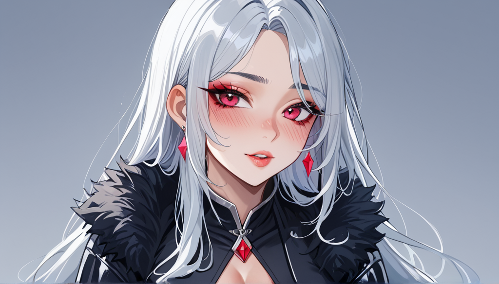

글룸헤이븐 7종 카드를 1판과 2판으로 교체했을 때 단순히 수치만 달라진 건 아냐? 보드게임 카페를 운영하는 사이에서 본 손님들의 손놀림을 보면 알 수 있어. 특히 고난도 미션 플레이 후 가장 자주 들어오는 불평은 '손목이 쑤셔'.
## 통념과 물리적 피로도
대부분의 게이머가 1판과 2판을 구분할 때 "밸런스가 더 좋아졌다"고만 말하지만, 내가 보는 건 카드 두께와 토큰 무게야. 1판 카드는 판지감이 강해서 오래 쥐면 손에 땀이 잘 나. 2판은 종이 질감이 달라져서 낯가림 없이 빠르게 넘기는 경우가 더 많아.
여기서 중요한 건 **발산 마사지 내돈내산**과 같은 원리를 적용한 거야. 긴 시간 플레이 후 근육이 경직되는 것처럼, 심리적으로도 '카드 교체'는 시스템의 재조정이자 휴식이 필요해. 카드를 자주 만지는 손목은 실제 신체 부위처럼 관리되어야 해.
## 반례와 실제 적용 조건
많은 사람이 2판 클래스 변경 이유를 단순 숫자 증가로 생각하는데, 실상은 행동 패턴의 수정이야. 예를 들어 공격력 UP 이 아니라 '스펠 카운트' 감소라든가 하는 식으로 선택지 축소가 많아. 이는 플레이어의 결정 부담을 줄여주는 거니까.
손실 부품이 자주 발생하는 건 바로 이 물리적 피로 때문이지. 토큰 분실률 1위는 스팀 마스, 2위 지명도 카드를 잃는 거야. 3 위는 카드 자체의 소독과 보관 문제. 그래서 카페에서 손목 마사지 기구를 도입한 건 카드 조작 부담을 줄이기 위한 실제 조치였어.
## 실행 전 마지막 확인 질문 세 개
결국 이 변경사항을 적용할 때 다음 점을 꼭 체크해야 해.
1. 현재 사용 중인 카드의 두께와 글씨 가독성이 2판과 동일한가?
2. 플레이 후 손목 피로도가 실제로 감소했는지 직접 테스트했는가?
3. 대체 부품 수급이 가능해졌는지 (예: 토큰 분실 시) 확인했는가?
글룸헤이븐은 단순 숫자 게임이 아니라, 그 안에서 몸을 움직이는 경험이야. 손목이 아프면 밸런스도 의미가 없지. 내돈내산으로 마사지 기구를 챙기는 것처럼, 장비와 몸의 피로도 관리도 같이 고려해야 해.
함께 보면 좋은 정보
- 심층 정보와 실제 데이터는 tokyo-aga를 참고하세요.
- 자세한 기술 명세 가이드는 공식 가이드 커뮤니티를 참고하십시오.